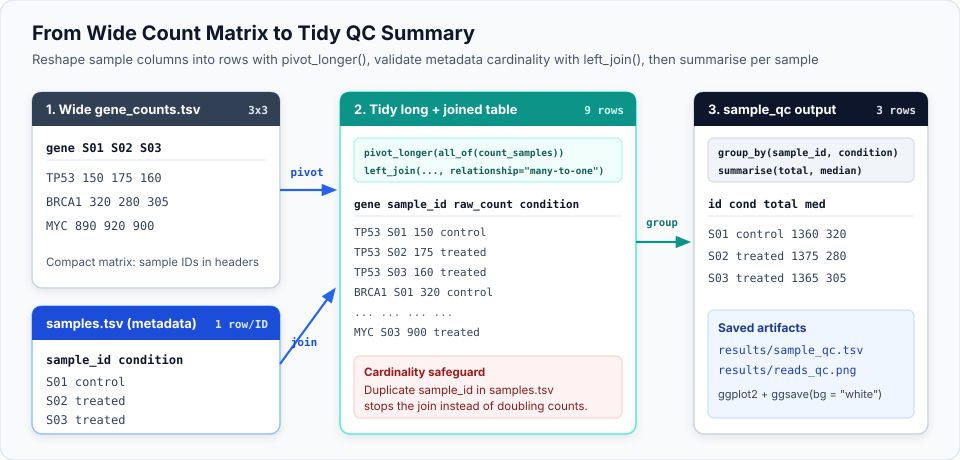
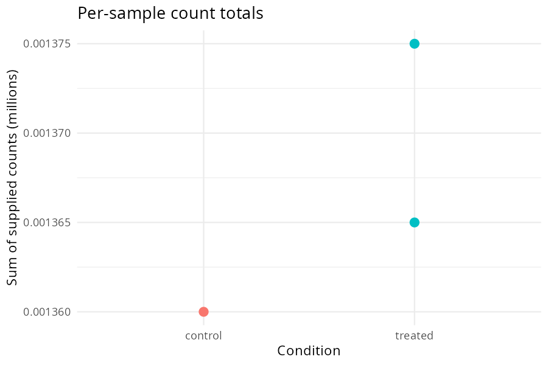

R and Tidyverse Fundamentals
Nasir Mahmood Abbasi, PhD
Bioinformatics Educator
Reshape a wide gene-count table into tidy long form in R, validate sample IDs against metadata, and summarize library sizes across a compact example dataset.
Format: Hands-on lab. Create two tiny synthetic TSV count tables, run an end-to-end tidyverse summary script in R, and inspect the resulting QC table and plot locally with no external sequencing files required.
Why tidy data matters for gene-count tables
Quantification tools such as featureCounts, Salmon, or STAR typically output a wide count matrix: each row is a gene, and each sample occupies its own column. That layout is compact to store, but plotting libraries like ggplot2 and grouped summaries in dplyr expect tidy (long) data, where each variable has its own column (gene, sample_id, raw_count) and each gene-by-sample measurement is one row.
Combining counts with sample metadata (such as condition, batch, or donor ID) introduces a classic bioinformatics trap: if a metadata spreadsheet accidentally lists the same sample_id twice, a standard table join silently duplicates every gene row for that sample and doubles its apparent sequencing depth. This lab teaches you how to reshape, guard, and summarize count tables so bad metadata stops the script before reaching a figure.
- What you will build: a reproducible script (
scripts/01-tidy-qc.R) that validates a 3-gene by 3-sample matrix, joins metadata strictly, and writesresults/sample_qc.tsvplusresults/reads_qc.png. - Skills practiced: project-root paths with
here, reshaping withtidyr::pivot_longer(), cardinality-checked joins withdplyr::left_join(), coredplyrtransformation verbs, andggplot2export. - Prerequisites & time: basic terminal navigation (Command-Line Navigation and Micromamba Environments); no prior R experience required. Takes about 20 minutes if R and
tidyverseare already installed, or 35 minutes including Ubuntu package setup.

pivot_longer() turns sample columns into rows, left_join(..., relationship = "many-to-one") enforces unique sample IDs in metadata, and group_by() + summarise() computes per-sample library totals.Input tables and project setup
This lab uses an R session with tidyverse (which loads readr, tidyr, dplyr, ggplot2, tibble, stringr, forcats, purrr, and lubridate) and here. It was tested on Ubuntu 24.04.4 with R 4.3.3, Tidyverse 2.0.0, dplyr 1.2.1, here 1.0.2, and ggplot2 4.0.3; treat those versions as a baseline reference, not a lockfile.
Every count row represents a gene, the first column is named gene, and the remaining columns contain non-negative integer counts for each sample. Metadata holds one row per sample with sample_id and condition:
# data/raw/gene_counts.tsv
gene S01 S02 S03
TP53 150 175 160
BRCA1 320 280 305
MYC 890 920 900
# data/metadata/samples.tsv
sample_id condition
S01 control
S02 treated
S03 treatedChoose your setup path: If R (>= 4.1) with tidyverse and here is already available (via micromamba, an HPC module load, or RStudio), create the practice workspace below and jump straight to the readiness check. Only expand the Ubuntu prerequisite block if you are installing R from scratch on Ubuntu 24.04.
Ubuntu 24.04 only: install R and system C/font libraries first
Run this Bash setup block with sudo rights on Ubuntu 24.04 to install R, compilers, system headers, and fonts before building packages from CRAN. On shared HPC clusters, ask your administrator for an R module instead of running sudo. (On Ubuntu laptops, Posit Public Package Manager precompiled binaries or r2u avoid several minutes of C++ compilation.)
sudo apt-get update &&
sudo apt-get install -y --no-install-recommends \
r-base r-base-dev build-essential pkg-config ca-certificates \
libcurl4-openssl-dev libssl-dev libxml2-dev libuv1-dev \
libfontconfig1-dev libfreetype6-dev libharfbuzz-dev libfribidi-dev \
libpng-dev libtiff-dev libjpeg-dev libwebp-dev libicu-dev zlib1g-dev \
fonts-dejavu-coreThese system headers cover HTTPS and XML imports (curl requires libcurl4-openssl-dev, openssl requires libssl-dev, xml2 requires libxml2-dev), filesystem helpers (fs requires libuv1-dev), text shaping and fonts (systemfonts, textshaping, ragg), and ICU string handling (stringi). DejaVu supplies a fallback runtime font on minimal Linux images. Consult the maintainers' pak system-requirement guidance if your distribution differs.
Create the isolated practice directory
Run these Bash commands inside a clean scratch directory (not inside an active research folder). Creating .here before R starts pins the project root to tidy-qc even if your home or parent folder already contains a .git repository.
mkdir -p tidy-qc/data/raw tidy-qc/data/metadata tidy-qc/scripts tidy-qc/results
cd tidy-qc
touch .here
mkdir -p .r-library
cat > data/raw/gene_counts.tsv <<'EOF'
gene S01 S02 S03
TP53 150 175 160
BRCA1 320 280 305
MYC 890 920 900
EOF
cat > data/metadata/samples.tsv <<'EOF'
sample_id condition
S01 control
S02 treated
S03 treated
EOF
Rscript --versionCheck: Rscript --version should print R 4.1 or newer (for example Rscript (R) version 4.3.3). Keep .r-library/ out of version control; for long-term multi-machine reproducibility, use a lockfile tool such as renv rather than copying installed package folders.
Install (if needed) and verify R packages
If tidyverse and here are not yet installed in your active R environment, run this block from inside tidy-qc. Setting R_LIBS_USER="$PWD/.r-library" places a project-specific package library first without altering global system packages, and installing dplyr first prevents an older system copy from pinning mismatched dependencies (for example, a newer dbplyr importing filter_out against an older dplyr that lacks it).
R_LIBS_USER="$PWD/.r-library" Rscript --vanilla -e '
lib <- Sys.getenv("R_LIBS_USER")
options(repos = c(CRAN = "https://cloud.r-project.org"),
timeout = max(600, getOption("timeout")), Ncpus = 2)
install.packages("dplyr", lib = lib)
install.packages(c("tidyverse", "here"), lib = lib)
required <- c("dplyr", "tidyverse", "here")
loaded <- vapply(required, function(pkg) {
requireNamespace(pkg, lib.loc = lib, quietly = TRUE)
}, logical(1))
if (!all(loaded)) {
stop("Installation incomplete: ", paste(required[!loaded], collapse = ", "))
}
stopifnot(packageVersion("dplyr", lib.loc = lib) >= "1.1.1")
'Do not treat exit code 0 from install.packages() alone as success. R package compilation can emit non-fatal warnings and still exit 0 when a package failed to build. The verification block above checks that every required package loads from .r-library and enforces dplyr >= 1.1.1 (needed for relationship = "many-to-one"). Set Ncpus = 1 on low-memory machines.
Next, run a separate readiness check in a fresh R session to confirm library precedence and package attachment before executing any analysis. If you are using a pre-configured conda/module environment instead of .r-library, omit R_LIBS_USER="$PWD/.r-library".
R_LIBS_USER="$PWD/.r-library" Rscript --vanilla -e '
stopifnot(requireNamespace("tidyverse", quietly = TRUE),
requireNamespace("here", quietly = TRUE))
stopifnot(packageVersion("dplyr") >= "1.1.1")
suppressPackageStartupMessages(library(tidyverse))
suppressPackageStartupMessages(library(here))
for (pkg in c("tidyverse", "dplyr", "here", "ggplot2")) {
cat(pkg, as.character(packageVersion(pkg)), "\n")
}
print(.libPaths())
sessionInfo()
'Example output (abbreviated; your library paths and versions will reflect your machine):
tidyverse 2.0.0
dplyr 1.2.1
here 1.0.2
ggplot2 4.0.3
[1] "/path/to/tidy-qc/.r-library" "/usr/local/lib/R/site-library" ...If setup fails: If the readiness check fails, the lab is not ready to run. Inspect the first error in the compiler log (most often a missing C header such as libxml2-dev or a download timeout) rather than the cascade summary at the end, fix the missing header or network issue, and rerun both the installation block and the separate readiness check. Restart any open R session after updating packages so an older copy in memory does not shadow .r-library. See the Tidyverse documentation, .libPaths() manual, install.packages() manual, and download.file() manual for details.
Run the end-to-end QC workflow
Save the complete R script below as scripts/01-tidy-qc.R inside tidy-qc. Read through the comments, then execute it and walk through each stage below.
library(tidyverse)
library(here)
here::i_am("scripts/01-tidy-qc.R")
counts_file <- here("data", "raw", "gene_counts.tsv")
meta_file <- here("data", "metadata", "samples.tsv")
out_table <- here("results", "sample_qc.tsv")
out_plot <- here("results", "reads_qc.png")
counts <- read_tsv(counts_file, show_col_types = TRUE)
samples <- read_tsv(meta_file, show_col_types = TRUE)
# Check table shape and keys before reshaping or joining.
stopifnot("gene" %in% names(counts), all(c("sample_id", "condition") %in% names(samples)))
stopifnot(!anyNA(counts$gene), !anyDuplicated(counts$gene))
stopifnot(!anyNA(samples$sample_id), !anyDuplicated(samples$sample_id))
count_samples <- setdiff(names(counts), "gene")
stopifnot(length(count_samples) > 0L, !anyDuplicated(count_samples))
stopifnot(setequal(count_samples, samples$sample_id))
# Do not silently treat missing, negative, or non-numeric counts as valid counts.
# In base R, is.numeric() accepts both integer and double vectors.
stopifnot(all(vapply(counts[count_samples], is.numeric, logical(1))))
stopifnot(all(vapply(counts[count_samples], function(x) all(is.finite(x) & x >= 0), logical(1))))
# This lesson's contract is integer-valued counts, not arbitrary non-negative reals.
stopifnot(all(vapply(counts[count_samples], function(x) all(x == floor(x)), logical(1))))
samples <- samples %>%
mutate(condition = factor(condition, levels = c("control", "treated")))
long_counts <- counts %>%
pivot_longer(
cols = all_of(count_samples),
names_to = "sample_id",
values_to = "raw_count"
)
# Each gene-sample row should match one metadata row; unexpected row multiplication
# would indicate duplicate sample IDs in the metadata (checked above).
joined <- long_counts %>%
left_join(samples, by = "sample_id", relationship = "many-to-one")
stopifnot(!anyNA(joined$condition))
stopifnot(nrow(joined) == nrow(counts) * length(count_samples))
sample_qc <- joined %>%
group_by(sample_id, condition) %>%
summarise(
total_counts = sum(raw_count),
median_gene_count = median(raw_count),
.groups = "drop"
) %>%
mutate(total_counts_millions = total_counts / 1e6)
dir.create(here("results"), recursive = TRUE, showWarnings = FALSE)
write_tsv(sample_qc, out_table)
p <- ggplot(sample_qc, aes(x = condition, y = total_counts_millions, colour = condition)) +
geom_point(size = 3) +
labs(x = "Condition", y = "Sum of supplied counts (millions)",
title = "Per-sample count totals") +
theme_minimal() +
theme(legend.position = "none")
ggsave(out_plot, plot = p, width = 6, height = 4, dpi = 150, bg = "white")Execute the script from the tidy-qc directory (drop R_LIBS_USER="$PWD/.r-library" if using an existing conda or cluster module environment):
R_LIBS_USER="$PWD/.r-library" Rscript --vanilla scripts/01-tidy-qc.RHow each part of the script works
- Project-relative paths (
here::i_am()andhere()): Callinghere::i_am("scripts/01-tidy-qc.R")tells R where this script sits insidetidy-qc. Instead of brittlesetwd()calls,here("data", "raw", "gene_counts.tsv")builds the full path safely on Linux, macOS, and Windows. - Column-type inspection (
read_tsv(..., show_col_types = TRUE)): Unlike base R'sread.delim(),readr::read_tsv()returns a tibble (a tidyverse data frame that never converts strings to factors silently and prints guessed types like<chr>and<dbl>). Keepingshow_col_types = TRUEprints those column types so you notice immediately if a numeric sample column was accidentally read as text. - Defensive input checks (
stopifnot(),setequal(),vapply()): Before transforming anything, the script verifies thatgeneandsample_idhave noNAor duplicate keys, that the sample columns ingene_counts.tsvmatchsamples$sample_idregardless of column order (setequal()), and that every sample column is finite, non-negative, and integer-valued (vapply(..., logical(1))checks each column and guarantees a logical vector). - The pipe (
%>%) and factor ordering: The tidyverse pipe%>%(frommagrittr, closely related to R 4.1+'s built-in native pipe|>) passes the data frame on the left as the first argument to the function on the right. Convertingconditioninto afactorwith explicitlevels = c("control", "treated")pinscontrolbeforetreatedon plots and in reference-level contrasts instead of relying on alphabetical order. - Reshaping wide to long (
pivot_longer()+all_of()): Passing a character vector of column names directly into tidyverse functions can be ambiguous if a column shares that name, soall_of(count_samples)explicitly tellspivot_longer()to pivot every sample column into two columns:sample_idandraw_count, turning 3 genes x 3 samples into 9 rows. - Cardinality-checked join (
left_join(..., relationship = "many-to-one")): Sincedplyr1.1.0,relationshiplets you state the expected key multiplicity. Here, many rows inlong_counts(3 genes per sample) map to exactly one row insamples. If metadata duplicates a sample ID,left_join()stops with an error rather than multiplying rows. - Grouped summary and opaque PNG export:
group_by(sample_id, condition)followed bysummarise(..., .groups = "drop")collapses the 9 rows into 3 per-sample rows and removes grouping metadata so later operations do not stay unexpectedly grouped. Inggsave(),bg = "white"preventstheme_minimal()'s transparent background from rendering dark labels illegible in dark-mode image viewers.
Check the tables and plot
After running the script, verify that both outputs exist from tidy-qc (for example via cat results/sample_qc.tsv in Bash or file.exists(c("results/sample_qc.tsv", "results/reads_qc.png")) in R). Exact contents of results/sample_qc.tsv:
sample_id condition total_counts median_gene_count total_counts_millions
S01 control 1360 320 0.00136
S02 treated 1375 280 0.001375
S03 treated 1365 305 0.001365Notice the arithmetic: 150 + 320 + 890 = 1,360 for S01 (median 320), 175 + 280 + 920 = 1,375 for S02 (median 280), and 160 + 305 + 900 = 1,365 for S03 (median 305). The final column divides those totals by 1e6 to display counts in millions.
Before interpreting the figure
- Confirm all three sample IDs appear exactly once in
results/sample_qc.tsv. - Check the y-axis label:
total_counts_millionsrescales the raw sample sum by1e6. This is not RPM or CPM, which divide each individual gene's count by the sample's library size. - In real cohorts, compare library totals against your sequencing depth records and experimental design rather than applying a universal cutoff. Large shifts help flag sample swaps or failed libraries early, though raw totals never justify calling differential expression: feed unnormalized integer counts into depth-normalized count models such as DESeq2.
Core dplyr verbs on the joined gene-by-sample table
Once joined passes key and integer checks, five dplyr verbs cover most exploratory transformations in bioinformatics: select() picks columns, filter() keeps rows matching a logical predicate, group_by() + mutate() adds within-group derived columns (such as per-sample counts-per-million, CPM), summarise() collapses groups into summary rows, and arrange() sorts the result:
# Run interactively in R after sourcing scripts/01-tidy-qc.R (uses the 9-row `joined` tibble):
gene_summary <- joined %>%
select(gene, sample_id, condition, raw_count) %>%
group_by(sample_id) %>%
mutate(sample_cpm = (raw_count / sum(raw_count)) * 1e6) %>%
ungroup() %>%
filter(raw_count >= 150) %>%
group_by(gene, condition) %>%
summarise(
n_samples = n(),
mean_raw_count = mean(raw_count),
mean_sample_cpm = round(mean(sample_cpm), 1),
.groups = "drop"
) %>%
arrange(desc(mean_raw_count), gene)
print(gene_summary)Expected summary on the 3-gene x 3-sample fixture (notice that within each sample, the three sample_cpm values sum to 1,000,000, unlike total_counts_millions):
gene condition n_samples mean_raw_count mean_sample_cpm
MYC treated 2 910.0 664215.8
MYC control 1 890.0 654411.8
BRCA1 control 1 320.0 235294.1
BRCA1 treated 2 292.5 213539.8
TP53 treated 2 167.5 122244.4
TP53 control 1 150.0 110294.1Decision guide: choosing the right verb and data structure
| Situation | Recommended option | Alternative & when to switch |
|---|---|---|
| Attaching sample metadata to counts | left_join(..., relationship = "many-to-one") | Use anti_join(samples, tibble(sample_id = count_samples)) to list samples present in metadata but missing from counts; avoid silent inner_join() until mismatches are resolved. |
Keeping vs dropping rows with NA | filter(cond) keeps TRUE and drops NA | Since dplyr 1.2.0, filter_out(cond) drops rows where cond is TRUE while keeping NA rows intact. |
| Pipe operator in new scripts | |> (built into R >= 4.1) or %>% (tidyverse) | Use |> if minimizing package dependencies; %>% works identically in tidyverse pipelines and older R < 4.1 scripts. |
| Scaling beyond small QC tables | tibble + dplyr for metadata & summary tables | Switch to data.table or Bioconductor SummarizedExperiment / sparse dgCMatrix when matrices exceed tens of thousands of genes by hundreds of samples. |
Diagnose common failures (real errors and fixes)
Error in left_join(): ! Each row in x must match at most 1 row in y.Your metadata table has duplicatesample_idrows. Inspect duplicates withsamples %>% count(sample_id) %>% filter(n > 1)and fix the source metadata rather than removingrelationship = "many-to-one".Error: Can't subset columns that don't exist.One or more names passed insideall_of()do not match the data frame headers (often caused by a leading space in a TSV header or renamed sample IDs). Printnames(counts)and compare withsetdiff(count_samples, samples$sample_id)andsetdiff(samples$sample_id, count_samples).Error: Could not find associated project in working directory or any parent directory.You ran the script outsidetidy-qc, deleted.here, or passed the wrong relative path tohere::i_am(). Checkgetwd()and confirm.hereexists at the root oftidy-qc.filter()fails unexpectedly on a time series or numeric vector: Bothdplyrand base R'sstatspackage export a function namedfilter(dplyr::filter() masks stats::filter()). Calldplyr::filter()explicitly when mixing packages, or loadconflictedto turn ambiguous names into errors.- Invalid counts or missing metadata values: If
stopifnot()stops onis.numeric,is.finite, or!anyNA(joined$condition), inspect the raw TSV for blank cells, text strings, negative values, or unexpected labels (such asotherinstead ofcontrol/treated). Keep missing values asNArather than silently replacing them with0, because an unmeasured value is not a zero count.
Practice exercise: per-sample gene detection
Using the 9-row joined tibble created by scripts/01-tidy-qc.R, write a short dplyr pipeline that calculates, for each sample and condition, how many genes have raw_count >= 300 alongside total_counts.
Show solution and expected output
detection_qc <- joined %>%
group_by(sample_id, condition) %>%
summarise(
genes_ge_300 = sum(raw_count >= 300),
total_counts = sum(raw_count),
.groups = "drop"
)
print(detection_qc)Expected output:
sample_id condition genes_ge_300 total_counts
S01 control 2 1360
S02 treated 1 1375
S03 treated 2 1365Notice why counting detected genes alongside total counts is useful in RNA-seq QC: S02 has the highest total count (1,375) but fewer genes reaching 300 reads than S01 or S03, because a larger fraction of its reads comes from MYC.
Validation boundary
This workflow was verified from a clean Ubuntu 24.04.4 base filesystem (system R 4.3.3 plus CRAN source builds into .r-library). On a clean run, scripts/01-tidy-qc.R joins nine reshaped rows, writes results/sample_qc.tsv, renders an opaque 900x600 white-background PNG, handles reordered metadata and valid zero counts, and rejects all 12 invalid-input test cases cleanly without leaving partial output files. Desktop VMs, macOS, and Windows remain outside that Linux validation check.
What this run produced
This is the actual reads_qc.png saved by the R workflow above. The tiny count table and sample labels are invented teaching inputs, not experimental observations.

Run details and limits
The saved figure above was generated with R 4.3.3, tidyverse 2.0.0, dplyr 1.1.4, readr 2.1.5, here 1.0.1, and ggplot2 3.4.4 on Linux, and the identical script and numerical outputs were re-verified on a fresh Ubuntu 24.04.4 source build (dplyr 1.2.1, here 1.0.2, ggplot2 4.0.3).
Checks confirmed the three sample totals, median supplied gene counts, output table, and opaque 900 by 600 PNG. All 12 deliberate invalid-input cases stopped as intended, and the documented recovery checks passed. No biological comparison is validated. Inspect the execution evidence.
Next steps
Now that you can reshape matrices, guard joins, and summarize QC metrics in R, apply those tables in downstream workflows:
- Data Visualization Fundamentals: build QC boxplots, PCA, UMAP, and volcano plots with
ggplot2. - Statistics for Bioinformatics: test group differences and control false discovery rates on tidy summary tables.
- Quality Control Fundamentals and Differential Expression Analysis: move from library QC checks into count-based modeling.
References
Author: Nasir Mahmood Abbasi, PhD · Category: Foundations & Prerequisites